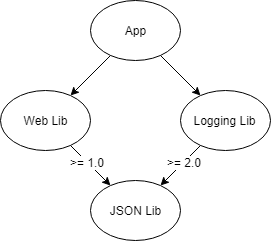
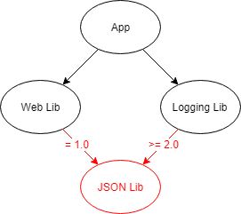
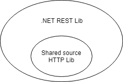
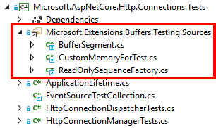

Dependencies
The primary way of adding dependencies to a .NET library is referencing NuGet packages. NuGet package references not only allow you to quickly reuse and leverage already written functionality but also provide a common source of friction for .NET developers. Correctly managing dependencies is important to prevent changes in other .NET libraries from breaking your .NET library, and vice versa!
Diamond dependencies
It is a common situation for a .NET project to have multiple versions of a package in its dependency tree. For example, an app depends on two NuGet packages, each of which depends on different versions of the same package. This is known as a diamond dependency.

At build time NuGet analyzes all the packages that a project depends on (including the dependencies of dependencies) and when multiple versions of a package is detected, rules are evaluated to pick one. Unifying packages is necessary because running side-by-side versions of an assembly is problematic in .NET.
Most diamond dependencies are resolved without issue, however they can create issues in certain circumstances:
- Conflicting NuGet package references prevent a version from being resolved during package restore.
- Breaking changes between the versions causes bugs and exceptions at runtime.
- The package assembly is strong named, the assembly version changed, and the app is running on the .NET Framework. Assembly binding redirects are required.
It is impossible to know what packages will be used alongside your own, but you can reduce the likelihood of a diamond dependency causing your library to break by minimizing the number of packages you depend on.
✓ DO review your .NET library for unnecessary dependencies.
NuGet dependency version ranges
A package reference specifies the range of valid packages it allows. Typically, the package reference version in the csproj file is the minimum version and there is no maximum.
<!-- Accepts any version 1.0 and above. -->
<PackageReference Include="ExamplePackage" Version="1.0" />
The rules that NuGet uses when resolving dependencies are complex, but NuGet always attempts to find the lowest applicable version. NuGet prefers the lowest application version over using the highest available because the lowest will have the least compatibility issues.
Because of NuGet's lowest application version rule, it is not necessary to place an upper version or exact range on package references to avoid getting the latest version. NuGet already tries to find the lowest, most compatible version for you.
<!-- Accepts 1.0 up to 1.x, but not 2.0 and higher. -->
<PackageReference Include="ExamplePackage" Version="[1.0,2.0)" />
<!-- Accepts exactly 1.0. -->
<PackageReference Include="ExamplePackage" Version="[1.0]" />
Upper version limits will cause NuGet to fail if there is a conflict, e.g. one library accepts exactly 1.0 while another library requires 2.0 or above. While breaking changes may have been introduced in version 2.0, a strict or upper limit version dependency guarantees an error.

✗ DO NOT have NuGet package references with no minimum version.
✗ AVOID NuGet package references that demand an exact version.
✗ AVOID NuGet package references with a version upper limit.
More Information
NuGet shared source packages
One way to reduce external NuGet package dependencies is to reference share source packages. A shared source package contains source code files that are included in a project when referenced. Because you are just including source code files that are compiled with the rest of your project there is no external dependency and chance of conflict.
Shared source packages are great for including small pieces of functionality, e.g. a shared source package containing helper methods for making HTTP calls.

Shared source packages can only be used by PackageReference, and should be a private reference to tell NuGet it is only used at development time and should not be exposed to anyone using your package.
<PackageReference Include="Microsoft.Extensions.Buffers.Testing.Sources" PrivateAssets="All" Version="1.0" />

✓ CONSIDER referencing shared source packages for small, internal pieces of functionality.
✓ CONSIDER making your package a shared source package if it provides small, internal pieces of functionality.
✓ DO reference shared source packages with PrivateAssets="All".
✗ AVOID shared-source package types in your public API.
Shared-source types are compiled into the referencing assembly and can't be exchanged across assembly boundaries, e.g. a shared-source
IRepositorytype in one project is a separate type from the same shared-sourceIRepositoryin another project.
More Information